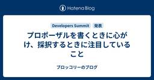
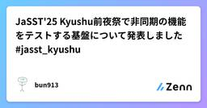
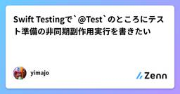
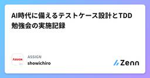
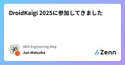
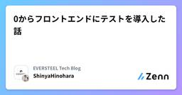

直近1週間の更新
10/25 (土)
クラシフィケーションツリー技法ってなに？  Zennの「Test」のフィード
Zennの「Test」のフィード
はじめに今回はテスト技法の一つ『クラシフィケーションツリー技法』についてまとめてみようと思います。 クラシフィケーションツリー技法とはこのテスト技法は以下のような特徴を持ちます。テスト対象の想定される振る舞いは複数の考慮要素の組み合わせにより導出される考慮要素の値は同値分割により分岐的にまとめることが出来る考慮要素は論理的に繋がりがあり飛躍がなくMECEであるテスト対象の想定される振る舞いを網羅する際、そのテストケースの導出時の論理的な切り口として同値分割の手法を用いることで、テストを網羅的で効率的に実施することが出来る技法です。同じブラックボックステスト技...
10時間前

クラシフィケーションツリー技法ってなに？  ソフトウェアテストタグが付けられた新着記事 - Qiita
ソフトウェアテストタグが付けられた新着記事 - Qiita
はじめに今回はテスト技法の一つ『クラシフィケーションツリー技法』についてまとめてみようと思います。クラシフィケーションツリー技法とはこのテスト技法は以下のような特徴を持ちます。テスト対象の想定される振る舞いは複数の考慮要素の組み合わせにより導出される考慮要素...
10時間前

プロポーザルを書くときに心がけ、採択するときに注目していること ブロッコリーのブログ
はじめに 技術系カンファレンスでは、一般公募（プロポーザルの募集）を行い、運営が審査して採択をする形式があります。 プロポーザルを見たり、運営側として採択を決めたりするときに、「これってテーマは良さそうなんだけど、伝えたい内容が少し見えてこないから採択できないかな…」と思うものが多数あります。 そこで、私がプロポーザルを作成する際に気をつけていることや運営側として気にしていることを言語化してみたいと思います。あくまでも私の主観ですので、その点はご了承ください。 なお、私がどんな立場なのか（プロポーザルの応募者やカンファレンスの運営実績など）については、本記事末尾の注釈で紹介しています。（応募者…
12時間前
10/24 (金)

ソフトウェアテストがもたらす“安心”について考えてみた ソフトウェアテストタグが付けられた新着記事 - Qiita
ソフトウェアテストが提供できるものは、そのソフトウェアを作る人や使う人にとっての「安心」だと思う。ただ、ソフトウェアテストがどんな性質で安心をもたらすかは、人によって異なる。ある人にとっては「このテストケースをPASSしたから安心」かもしれない。別の人にとっては「Q...
1日前
ユニットテストがしやすいコード構成について過去を振り返って考えてみた
Zennの「Test」のフィード
はじめにインテグレーションテスト主体でテストを書いていく場合、テスト実行時間が長い問題が出てきた。（インスタンスをたくさん並べてパラレル実行にするとかやりようはあると思う）解決するためには出来る限りユニットテストに寄せた方が良いが、どういったコード構成ならユニットテストに寄せやすいのか？考えた。 今あるアーキテクチャから選べばいいじゃんという話もあるが。。。既存アーキテクチャだとなんかしっくりこないのでしっくりくるのを考えてみた。全部に当てはまる正解はないので、自分の関わってきたシステムを振り返り、それらを踏まえて考えてみる。実際に本番稼働していたシステムを元に考える...
2日前

TMX Automation Helpers リファレンス１：数値の加算と減算  Ranorex Blog - UIテスト自動化ツール 『Ranorex』
Ranorex Blog - UIテスト自動化ツール 『Ranorex』
2025年1月にリリースしたTMX版のオートメーションヘルパーについて、利用ケースや提供しているメソッドの使い方を「TMX Automation Helpers リファレンス」として解説していきたいと思います。今回の記事 […]The post TMX Automation Helpers リファレンス１：数値の加算と減算 first appeared on UIテスト自動化ツール 『Ranorex』.
2日前
10/23 (木)
Vitest 4の新機能 expect.schemaMatching とHonoとZodでスキーマ駆動でテストをやる 2 Zennの「Test」のフィード
2 Zennの「Test」のフィード
はじめにこんにちは、株式会社アサインでエンジニアをしているうちほり(@showichiro0123)です。2025年10月22日にリリースされたVitest 4には、テスト駆動開発やスキーマ駆動開発を加速させる新機能が多数追加されました。中でも私の目を引いたのは、Zodなどのスキーマライブラリと統合できるexpect.schemaMatchingです。本記事では、Vitest 4の新機能を概観しつつ、expect.schemaMatchingを使ったスキーマ駆動テストの実践方法を、Honoを使ったWeb APIの開発例を交えて紹介します。 Vitest 4の主要な新機能ま...
2日前

JaSST'25 Kyushu前夜祭で非同期の機能をテストする基盤について発表しました #jasst_kyushu Zennの「Test」のフィード
こんにちは。ダイの大冒険エンジョイ勢のbun913と申します。本日JaSST'25 Kyushu前夜祭というイベントにて、私がメールやSlackの通知を起点にした非同期な機能に対する自動テストの基盤を作成したことについて発表しました。内容としては、以下のブログに書いてあることをベースにこれまでの環境やインフラ面での工夫についても触れた形になります。https://zenn.dev/moneyforward/articles/11b02308de20b1 発表の内容私たちのチームでは今実際に稼働しているシステムのAPIを順に実行して、返ってくる値を検証するAPIテストの自動化...
2日前
Storybook と Vitest で userEvent 取り違えをなくす Zennの「Test」のフィード
こんにちは Social PLUS のフロントエンドエンジニアのまっくすです。先日、Storybook を v7 → v8 にアップデートをしていた際に、Vitest のテストファイルに Storybook 用のモジュール@storybook/testing-library が紛れていたことに気がつきました。Storybook のアップデートに際して、@storybook/testing-library を @storybook/test に統合するために、@storybook/testing-library を devDependencies から削除したことで、Lintエラーが発...
2日前

Swift Testingで`@Test`のところにテスト準備の非同期副作用実行を書きたい Zennの「Test」のフィード
筋トレした後のサウナしながらの時間で考えたので、ツッコミどころはあるかもしれません。もし他に良い案があったらコメントに記載をお願いします。 はじめにテストコードでテストケース前に副作用を実行する際に、そのテストケース直前に書いてテストケース自体には書かないということをやりたいことがあると思います。SwiftTestingではArrangeをテストの直前にかけるようになりましたが、非同期処理や副作用を実行できないのが惜しいなと思ってました。もちろんヘルパー関数などにしても良いですが、AAA(Arrange, Action, Assertion)をもっと目立つようにしたいのをSwif...
2日前

AI時代に備えるテストケース設計とTDD勉強会の実施記録 Zennの「Test」のフィード
はじめに今回は、社内で実施した「テストケースの考え方・テスト駆動開発（TDD）勉強会」の内容や開催意図を紹介します。勉強会は私が座学用のスライドと演習課題を用意し、約2時間の枠で開催しました。参加者は10名弱で、前半を座学、後半を演習に充てて質問を受けつつ双方向で進めました。 背景と課題感なぜこのタイミングで「テストケースの考え方・テスト駆動開発（TDD）勉強会」を企画したのかというと、AI駆動開発により開発スピードが非常に高速化する中で、「人間の認知を超えて氾濫するコードに対して如何に品質を保証するのか？」という問いが自分の中にあり、一つの鍵としてTDDがあると考えている...
3日前
テストの正しさは誰が保証する？——ミューテーションテストの実験 Zennの「Test」のフィード
このドキュメントについて本記事はユニットテストが本当に有効なテストになっているかを調べるための手法のミューテーションテストについて紹介します。次にミューテーションテストを効率的に実行するために提案された手法を検討し、最後に実際にJava, JavaScript, Pythonでミューテーションテストを実施するツールの紹介をします。 擬似テスト済みメソッドとミューテーションテストユニットテストを書いていると、そのテストが本当に有効なテストであるかという課題が発生します。一般的にはコードカバレッジを評価するケースが多いですが、テストでカバーされているにも関わらず、そのテストが...
3日前
10/22 (水)
Rubyの拡張ライブラリーにはインストールできるかのテストも書こう 1
Zennの「Test」のフィード
RubyGemを作っている時、ピュアRubyのgemでGitコミットしたファイルがそのまま配信されるようなのはあまり問題にならないですが、拡張ライブラリーみたいにユーザーのインストール時にコマンドが走ったり、Raccみたいにリリース直前にファイルを生成してパッケージに含めたりするような物は、リリースしてからインストールできなかったり動作しないことに気付いたりするものです（済みません……）。そういうのを事前に防ぐため、ユニットテストで「ちゃんとインストールできること」も確認するようにしましょう。と、言いたいことはこれで全てなんですが、折角なので例も置いておきます。ここではテスティング...
3日前

システムテスト仕様書：項目の選び方と作成する意味 Zennの「Test」のフィード
このドキュメントは、システムテスト仕様書にどのような項目を選び、なぜそれらを作成するのかを説明するガイドです。実務で使える観点と優先順位付けの考え方、テンプレート例を含みます。 1. なぜシステムテスト仕様書を作るのか（目的）要件どおりにシステムが動作することを保証するための「設計された検証計画」を持つ。ステークホルダー（開発、QA、プロダクト、運用）で期待値を合わせるため。不具合の再現性を高め、修正と回帰テストを効率化するため。テストの自動化やCI連携を行う際の入力資料として使えるため。 2. 項目を選ぶ際の基本的な考え方項目選定は“すべてを網羅する”ではなく“...
3日前

DroidKaigi 2025に参加してきました Zennの「Test」のフィード
はじめにこんにちは！WED株式会社でAndroidの開発をしている松葉です！レシート買取アプリ「ONE」のAndroidの実装を担当しています。今回は9月に開催されたDroidKaigiに参加してきたので、参加した感想や心に残ったテーマを書いていこうと思います。毎年開催されているDroidKaigiですが、セッションや企業のブースを見て、KotlinMultiPlatFormなどを用いたクロスプラットフォーム開発、AI Agentや各種AIアシスタントを利用した開発支援といったテーマが多く目につきつつも、様々な領域でのAndroidならではの課題も話されていて、トレンドを追い...
3日前
Ambassadorsに聞くクラウドリフト・モダナイズの処方箋（AWSぶっちゃけ討論会vol.4）
SHIFT EVOLVE グループの新着イベント
開催日時: 2025/11/27 19:30 ～ 20:50<br />開催場所: オンライン<br /><br /><h2>Ambassadorsに聞くクラウドリフト・モダナイズの処方箋（AWSぶっちゃけ討論会vol.4）</h2><p>Ambassadorsに聞くクラウドリフト・モダナイズの処方箋クラウドリフト・モダナイズの最適解を、AWS Ambassadorたちが本音ベースでディスカッション！</p><p>AWS Ambassadorで、SHIFTのAWS CCoEをリードする大瀧が、各領域のエキスパートを招いて質問をぶつけ、教科書に載っていない、検索しても出てこない、リアルな現実を掘り下げます。</p><p>今回のゲストは、富士ソフト株式会社の大槻 剛 氏、デロイト トーマツ ウェブサービス株式会社の佐藤 亨 氏、NRIネットコム株式会社の志水 友輔 氏。<br> 「クラウドリフト・モダナイズの処方箋」をテーマに、「クラウドリフト＆シフトのベスト...
4日前
10/21 (火)

0からフロントエンドにテストを導入した話 123 Zennの「Test」のフィード
こんにちは。株式会社EVERSTEELでソフトウェアエンジニアをしている日野原です。主にフロントエンドを担当しており、技術としてはNext.jsを使用しています。（詳しい技術内容はこちらを参照）少し前の話になりますが、ゼロからテストを導入したので、その過程や戦略について話していこうと思います。フロントエンドのテストを検討している方や、テストの運用方法を迷っている方の参考になるかと思います。 Reactアプリにおけるテスト戦略と実践ガイド一昔前はフロントエンド開発においてテストはあまり重要視されていませんでした。しかし、フロントエンドの複雑さが増したため、最近ではテストが重要...
5日前
E2Eテストはどこまでやるべき？ 「テスト全体像」から範囲を決定する2つのヒント
MagicPod Blog
こんにちは。MagicPodでエバンジェリストをしているYoshiki Itoです。MagicPodに限らず、E2Eテストの自動化に取り組み始めた方が疑問に思うのが「E2Eテストってどのくらい／どこまでやればいいの？」という点です。かつてシステムテストやE2Eテストの自動化がいまほど普及していなかった頃には、なんでもかんでも自動化！100％の自動化率！といった、それまで行っていたたくさんの手動テストケースを片っ端から自動化するようなチームもあったようです。しかし、テストピラミッドの考え方をはじめ、テスト自動化に関するさまざまな情報・ナレッジが普及するとともに、上記のような「E2Eテストをたくさん自動化しよう」というやり方はアンチパターンだと認識されるようになりました。
5日前
10/20 (月)
Simplify Your Code: Functional Core, Imperative Shell Google Testing Blog
@media only screen and (max-width: 600px) { .body { overflow-x: auto; } .post-content table, .post-content td { width: auto !important; white-space: nowrap; }}This article was adapted from a Google Tech on the Toilet (TotT) episode. You can download a printer-friendly version of this TotT episode and post it in your office.By Arham JainIs your code a tangled mess of business logic and side effects? Mixing database calls, network requests, and other external interactions directly with your core l
5日前
10/19 (日)

社内ナレッジ検索は“索引づくり”が9割―RAGを長持ちさせる下ごしらえ Zennの「QA」のフィード
はじめに——答えは出るのに、肝心な時に外すのはなぜか社内のQ&Aや手順書を読ませると、最初はよく当たるのに、規模が増えるほど外れが混じる。よく見ると、文章の分け方やタグの付け方、検索キーワードの前提がバラバラで、索引（インデックス）の作りが弱い。道具を替える前に、土台を整える話をします。検索ベースの強化や“文脈を盛る”手法は各所で整理され、RAGの精度に直結することが報告されています。例えば「文脈付き埋め込み／BM25」を併用する手法や、文書設計のベストプラクティスが公開されています。(Anthropic) まず決めるのは“どの質問に答えるか”万能な検索はありま...
7日前